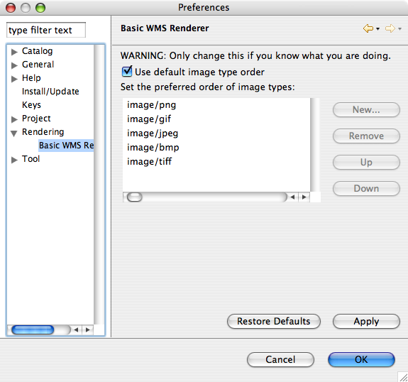

Rendering Preferences¶
There are a number of preferences that control the performance of rendering maps and appearance of the resulting maps. Often the preferences are a trade-off between performance and appearance.

Contents:
General Preferences¶
- Use anti-aliasing - When anti-aliasing is on the map is much smoother and accurate than with it off, however it is quite expensive so performance is much worse. Default anti-aliasing is off. However if features that should connect appear to be disconnected at small zoom levels then turn on antialiasing as it may be an aliasing issue.
- Render transparencies - When unchecked transparencies in the styles will be ignored. Transparencies take slightly longer to render. Default is on.
- Tiling layer rendering (experimental) - Currently this is not quite a tiling system. When panning a read-only layer the tiler will only request the required areas as opposed to requesting a full rendering of the viewport.
WMS Preferences¶

Available Preferences¶
- Image order - Not all Web Map Servers provide all image types as output images. The image order sets the order in which the image types are prioritized. For example png is usually preferred over jpg because it has an alpha channel so layers below the wms layer can be seen through a png (in transparent locations) but not through a jpg. However, on the macintosh certain png images can not be decoded so gif is often preferred over a png images on macintosh computers. As stated this is an advanced option so do not modify it unless you understand the image formats and the ramifications of using one image type over another.
Related reference